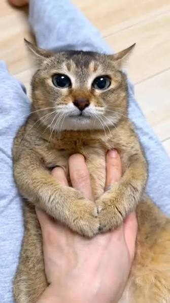

แมว หรือคำสุภาพว่า วิฬาร์ หรือ วิฬาร (ชื่อวิทยาศาสตร์: Felis catus) เป็นสปีชีส์สัตว์เลี้ยงของสัตว์เลี้ยงลูกด้วยนมกินเนื้อขนาดเล็ก[2][1] โดยเป็นแมวสปีชีส์เดียวในวงศ์เสือและแมว ที่ถูกปรับเป็นสัตว์เลี้ยง และมักเรียกเป็น แมวบ้าน เพื่อแยกมันจากสมาชิกที่อยู่ในป่า[4] แมวเหล่านี้สามารถอาศัยเป็นแมวบ้าน, แมวฟาร์ม หรือแมวจรได้ แต่แมวประเภทหลังสุดมักอาศัยอยู่อย่างอิสระและหลีกเลี่ยงการติดต่อกับมนุษย์[5] มนุษย์ให้ค่ากับแมวบ้านในฐานะคู่หูและความสามารถในการฆ่าสัตว์ฟันแทะ สำนักจดทะเบียนแมว (cat registries) หลายแห่งยอมรับสายพันธุ์แมวประมาณ 60 สายพันธุ์[6] แมวมีกายวิภาคคล้ายกับสปีชีส์วงศ์เสือและแมวอื่น ๆ มันมีร่างกายที่แข็งแรงยืดหยุ่น, ตอบสนองอย่างรวดเร็ว, ฟันและเล็บคมที่สามารถซ่อนได้เพื่อล่าเหยื่อขนาดเล็ก มุมมองกลางคืนกับการรับรู้กลิ่นที่ผ่านการพัฒนา และการสื่อสารของแมว เช่น การส่งเสียงอย่างเหมียว (meow), เพอร์ (purr), รัว (trill), ฟ่อ (hiss), คำราม (growl) และร้องคราง (grunt) เช่นเดียวกันกับภาษากายเฉพาะของแมว แมวเป็นนักล่าที่มักกระฉับกระเฉงที่สุดในตอนเช้าและค่ำ (crepuscular) ซึ่งแม้จะเป็นนักล่าผู้โดดเดี่ยวแต่ก็ยังเป็นสัตว์สังคม มันสามารถได้ยินเสียงความถี่ที่เบาหรือดังกว่าที่หูมนุษย์ได้ยิน เช่นเสียงที่หนูและสัตว์เลี้ยงลูกด้วยนมขนาดเล็กอื่น ๆ ทำ[7] แมวยังสามารถหลั่งและรับรู้ถึงฟีโรโมนด้วย[8] แมวบ้านเพศเมียมักออกลูกประมาณ 2 - 5 ตัวในช่วงฤดูใบไม้ผลิถึงปลายฤดูใบไม้ร่วง[9] แมวบ้านสามารถเลี้ยงและจัดแสดงในงานต่าง ๆ ได้ การควบคุมประชากรแมวสามารถทำได้ผ่านการทำหมัน แต่การขยายพันธุ์และการทิ้งสัตว์เลี้ยงก่อให้เกิดแมวจรจำนวนมากทั่วโลก ซึ่งมีส่วนต่อการสูญพันธุ์ของสปีชีส์ของนก สัตว์เลี้ยงลูกด้วยนม และสัตว์เลื้อยคลานทั้งหมด[10] แมวถูกปรับเป็นสัตว์เลี้ยงครั้งแรกในตะวันออกใกล้ช่วงประมาณ 7,500 ปีก่อนคริสต์ศักราช[11] เป็นที่เชื่อกันมานานแล้วว่าการเลี้ยงแมวเริ่มขึ้นในอียิปต์โบราณตั้งแต่ประมาณ 3,100 ปีก่อนคริสต์ศักราช โดยแมวได้รับการเคารพนับถือ[12][13] ข้อมูลเมื่อ 2021 มีการประมาณการว่ามีแมวที่มีเจ้าของประมาณ 220 ล้านตัว และแมวจร 480 ล้านตัวทั่วโลก[14][15] ข้อมูลเมื่อ 2017 แมวบ้านเป็นสัตว์เลี้ยงยอดนิยมอันดับสองในสหรัฐ โดยมีแมวที่มีเจ้าของ 95.6 ล้านตัว[16][17][18] และประมาณ 42 ล้านครัวเรือนมีแมวอย่างน้อยหนึ่งตัว[19] และ ข้อมูลเมื่อ 2020 ผู้ใหญ่ในสหราชอาณาจักรร้อยละ 26 มีแมวเลี้ยง โดยมีประชากรแมวเลี้ยงประมาณ 10.9 ล้านตัว